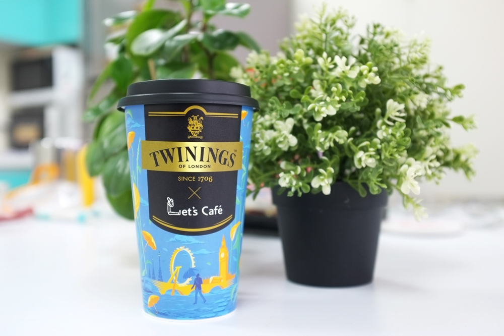

英國皇室認證的茶中精品
創始於1706年倫敦的茶中精品 TWININGS
自1837年起獲維多利亞女王青睞授證為英國皇室御用茶
以傳承超越三世紀的拼配製茶工藝為底蘊
融合倫敦 Mocktail 潮流，引領全球調飲新趨勢、品味英倫風尚
Let's Café 攜手唐寧茶帶您享受時尚品味的英倫午茶時光
產品有蜂蜜伯爵醇奶茶和蜂蜜四紅果醇奶茶
伯爵醇、四紅果奶茶+台灣荔枝蜜
伯爵茶擁有佛手柑和紅茶的經典風味
四紅果則有草莓、覆盆子、櫻桃、紅醋栗的誘人酸甜氣息
適合在午後時光細細品嘗與醇奶茶融合呈現了多層次微妙口感
感受如英倫紳士般的清新魅力
Let's Café經TWININGS認證之四紅果醇奶茶
加入蜜蜂工坊嚴選的台灣荔枝蜜
增添香甜風味更豐富了醇奶茶的層次韻味
成就今年冬季最浪漫酸甜、最滑順濃郁的私調風味
咖哩
媽媽煮藝
泡芙
心得